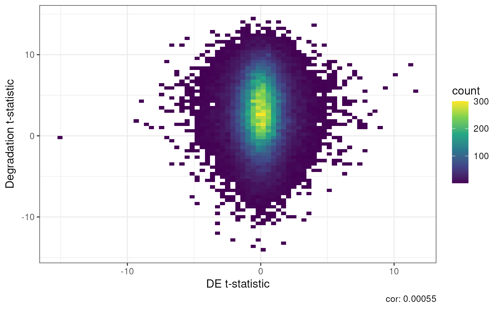

A DEqual plot compares the effect of RNA degradation from an independent
degradation experiment on the y axis to the effect of the outcome of
interest. They were orignally described by Jaffe et al, PNAS, 2017
https://doi.org/10.1073/pnas.1617384114. Other DEqual versions are
included in Collado-Torres et al, Neuron, 2019
https://doi.org/10.1016/j.neuron.2019.05.013. This function compares your
t-statistics of interest computed on transcripts against the
t-statistics from degradation time adjusting for the six brain regions from
degradation experiment data used for determining rse_tx.
DEqual(
DE,
deg_tstats = qsvaR::degradation_tstats,
show.legend = TRUE,
show.cor = c("caption", "corner-top", "corner-bottom", "none"),
font.size = 12,
cor.size = font.size/2,
cor.label = "cor: "
)a data.frame() with a column "t" containing the t-statistics
from Differential Expression, typically generated with limma::topTable().
rownames(DE) must have transcript Ensembl/Gencode IDs.
an optional data.frame() with a column "t" containing
t-statistics resulted from a degradation experiment. Default is the
internal qsvaR::degradation_tstats from the package authors.
logical (default TRUE) to show legend in the plot
specify where to show the correlation value. Can be one of "caption", "corner-top", "corner-bottom", or "none".
numeric value to set the base font size of the plot
numeric (default font.size/2) to set the font size for the correlation text
character (default "cor: ") to set the text preceding the correlation value
a ggplot object of the DE t-statistic vs
the DE statistic from degradation
## Random differential expression t-statistics for the same transcripts
## we have degradation t-statistics for in `degradation_tstats`.
set.seed(101)
random_de <- data.frame(
t = rt(nrow(degradation_tstats), 5),
row.names = sample(
rownames(degradation_tstats),
nrow(degradation_tstats)
)
)
## Create the DEqual plot
DEqual(random_de)
